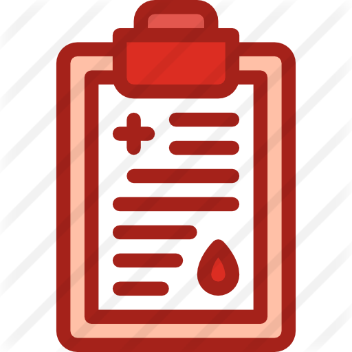

參與研究申請:
若想參與此研究，請與您的醫生聯絡。


抽血檢查、計步器
合共港幣100元正的現金劵
被隨機分配到財政及社會激勵措施組別之參與者有機會得到最高港幣1000元正現金

Designed by pngall.com

非傳染性疾病對社會的影響實在不容忽視。以二型糖尿病為例，居於香港和中國內地的人士中，每十名成年人口，就有超過一名患上此症。此外，當中有三億八千八百萬人口則被稱患有「早期型或潛伏型糖尿病」。為處理及減慢新診斷患上二型糖尿病之患者的病情，學者專家建議使用一系列干預生活方式的活動計劃，包括健康飲食、定時適量運動和戒掉吸煙的習慣。可是，這些計劃通常採納行為經濟學的原理，要求參加者的自律遵行。
由於行為經濟學已被接納去協助改善初期非傳染病患人士的病情控制，我們闡望此理論配合一系列的生活習慣的改變行動能有效地延遲或阻止二型糖尿病的病情惡化。
一份針對行為經濟學激勵的系統綜述指出，行為經濟學激勵措施能有效地推廣減磅、體育運動和服藥依順性等健康生活習慣和行為。為了更多了解固中的關係，我們有意研究行為經濟學激勵措施給新診斷患有二型糖尿病人士所帶來於控制血糖及生活習慣之影響。

有見及此，香港大學公共衛生學院誠意邀請500名合資格二型糖尿病患者參與是次為期九個月的隨機對照試驗。本試驗於三月開始，目的是比較 (1)經濟激勵措施組別 和 (2)對應組別 兩組之表現，從而提出更有效於香港公營醫療系統調節治療二型糖尿病之醫療支出的方法。我們會要求參與者接受定期抽血檢查，以及每星期向研究人員傳送步行結果。為了答謝參與者的幫忙，我們會送贈每位參與者計步器和現金禮劵。
若想參與此研究，請與您的醫生聯絡。

與跟進的研究人員見面。當您符合並願意參加此研究，您必須簽署知情同意書，以及告知參與者參考資料。您必須在研究人員協助下填寫背景資料問卷。
適用於所有合資格參加者；共有三次。

參加者會被隨機分到 (1)經濟激勵措施組別 或 (2)對應組別 兩組之一。請依從研究人員之指示進行研究。

填寫跟進問卷，並接受抽血檢查。

填寫跟進問卷並更新指定健康記錄。請同時接受抽血檢查。